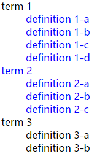
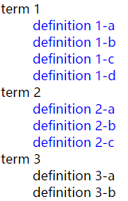
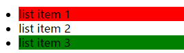
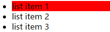

jQuery提供了一系列的筛选函数来对jQuery选择器选择的结果进行筛选。筛选函数大致可分为三个类别：过滤，查找和串联。
过滤
eq(index)
获取第N个元素。index为元素位置，为正数时表示从第一个元素开始，从0算起；为负数时表示从最后一个元素开始，从-1开始。
例如，获取匹配的第二个元素：
1 | <p> This is just a test.</p> |
1 | $("p").eq(1); // <p> So is this</p> |
获取倒数第二个元素：
1 | $("p").eq(-2); //<p> This is just a test.</p> |
first()
获取第一个元素。
例如，获取ul的第一个li：
1 | <ul> |
1 | $('ul>li').first(); // <li>list item 1</li> |
last()
和first()相反，获取最后一个元素。
hasClass(class)
hasClass()方法检查被选元素是否包含指定的class。
例如，判断选中元素是否含有happy类：
1 | <div class="happy"></div> |
1 | var a = $("div").hasClass("happy"); //true |
filter(selector,[fn])
filter()方法将匹配元素集合缩减为匹配指定选择器的元素。selector：字符串值，包含供匹配当前元素集合的选择器表达式。fn：回调函数，可选。
例如，保留带有select类的元素：
1 | <p>Hello</p> |
1 | $("p").filter(".selected"); //<p class="selected">And Again</p> |
使用回调函数实现：
1 | $("p").filter(function(index){ |
this指当前遍历的元素，返回true的元素将被保留。
保留第一个或带有select类的元素：
1 | $("p").filter(".selected,:first"); // <p>Hello</p>, <p class="selected">And Again</p> |
is(selector,[fn])
is()根据选择器、元素或 jQuery 对象来检测匹配元素集合，如果这些元素中至少有一个元素匹配给定的参数，则返回 true。fn：回调函数，可选。
例如，判断input的父元素是否为form：
1 | <form> |
1 | $("input[type='checkbox']").parent().is("form") //true |
使用回调函数实现：
1 | $("input[type='checkbox']").parent().is(function(){ |
map(callback(index,domElement))
map()把每个元素通过函数传递到当前匹配集合中，生成包含返回值的新的 jQuery 对象。
例如，有如下表单，要获取以逗号分隔的复选框列表ID：
1 | <form method="post" action=""> |
1 | $(':checkbox').map(function() { |
has(selector)
has()将匹配元素集合缩减为拥有匹配指定选择器或 DOM 元素的后代的子集。
例如，有如下嵌套的列表：
1 | <ul> |
现在给包含ul的li添加红色背景色：
1 | $( "li" ).has( "ul" ).css( "background-color", "red" ); |
not()
not()从匹配元素集合中删除元素。
例如有如下列表：
1 | <ul> |
给除了list item 3外的li添加红色背景色：
1 | $( "li" ).not("#notli").css( "background-color", "red" ); |
slice(selector,end)
slice()把匹配元素集合缩减为指定的指数范围的子集。
| 参数 | 描述 |
|---|---|
| selector | 基于 0 的整数值，指示开始选取元素的位置；如果是负数，则指示从集合末端开始的偏移量。 |
| end | 基于 0 的整数值，指示结束选取元素的位置；如果是负数，则指示从集合末端开始的偏移量。 如果省略，则选取范围会在集合末端结束。 |
1 | <p>This is a paragraph.</p> |
1 | $("p").slice(0, 2).wrapInner("<b></b>"); |
给倒数第二个p元素加粗：
1 | $("p").slice(-2, -1).wrapInner("<b></b>"); |
给第三个及其以后的p元素加粗：
1 | $("p").slice(2).wrapInner("<b></b>"); |
查找
children()
返回匹配元素集合中每个元素的子元素，添加可选参数可通过选择器进行过滤。
例如：找到div的所有包含selected类的子元素，然后将其置为蓝色：
1 | <div> |
1 | $( "div" ).children( ".selected" ).css( "color", "blue" ); |
closest(selector)
closest()方法获得匹配选择器的第一个祖先元素，从当前元素开始沿 DOM 树向上。
例如，当列表被点击的时候添加背景色，其余的移除背景色：
1 | $( document ).bind("click", function( e ) { |
find(selector)
find()方法获得当前元素集合中每个元素的后代，通过选择器、jQuery 对象或元素来筛选。
例如：搜索所有段落中的后代 span 元素，并将其颜色设置为红色：
1 | $("p").find("span").css('color','red'); |
next(selector)
next()获得匹配元素集合中每个元素紧邻的同胞元素。如果提供选择器，则取回匹配该选择器的下一个同胞元素。
例如，有如下简单列表：
1 | <ul> |
将list item 4添加红色背景色：
1 | $('li.third-item').next().css('background-color', 'red'); |
将list item 3添加红色背景色：
1 | $('li').next('.third-item').css('background-color', 'red'); |
等价于：
1 | $('ul').find('.third-item').css('background-color', 'red'); |
nextAll(selector)
查找当前元素之后所有的同辈元素。
还是上面的例子，给list item 3之后的所有同级li添加红色背景色：
1 | $('li.third-item').nextAll().css('background-color', 'red'); |
选择器用法，给含有red类的li添加红色背景色：
1 | <ul> |
nextUntil()
查找当前元素之后所有的同辈元素，直到遇到匹配的那个元素为止。
例如，有如下列表：
1 | <dl> |
找到跟随 <dt id="term-1"> 的同胞元素，直到 <dt id="term-3">，并为它们设置蓝色文本颜色：
1 | $("#term-1").nextUntil("#term-3").css("color", "blue"); |
效果如图：

找到跟随 <dt id="term-1"> 的<dd>同胞元素，直到 <dt id="term-3">，并为它们设置蓝色文本颜色：
1 | $("#term-1").nextUntil("#term-3",'dd').css("color", "blue"); |
 获得被定位的最近祖先元素。这些定位包括relative，absolute或fixed。
例如，有如下html：
1 | <ul class="level-1"> |
给<li class="item-a">最近的被定位父元素，即<li class="item-ii" style="position: relative;">添加红色背景色：
1 | $('li.item-a').offsetParent().css('background-color', 'red'); |
parent(selector)
获取匹配元素最近的父元素。
接着上面的例子，给<li class="item-a">的父元素，即<ul class="level-2">添加红色背景色：
1 | $('li.item-a').parent().css('background-color', 'red'); |
再如有如下html：
1 | <div><p>Hello</p></div> |
1 | $("p").parent(".selected").css("background", "yellow"); |
结果只有Hello Again拥有黄色背景色。
parents(selector)
获取匹配元素的符合筛选器selector所有层级的父元素。
有如下html：
1 |
|
1 | var a = $("b").parents().map(function(){ |
parentsUntil(selector)
查找当前元素的所有的父辈元素，直到遇到匹配的那个元素为止。
接着上面的html，有如下js代码：
1 | var parentEls = $("b").parentsUntil('div').map(function(){ |
prev(selector)
和next(selector)相反。
prevAll(selector)
和nextAll(selector)相反。
prevUntil(selector)
和nextUntil()相反。
siblings(selector)
匹配集合中每个元素的同胞。
串联
add()
add() 方法将元素添加到匹配元素的集合中。
例如，查找所有div并添加边框。然后将所有p添加到jQuery对象中并将其背景设置为黄色。
1 | $( "div" ).css( "border", "2px solid red" ).add( "p" ).css( "background", "yellow" ); |
这里只有div添加了边框！
给所有p和span添加黄色背景色：
1 | $( "p" ).add( "span" ).css( "background", "yellow" ); |
addBack()
该函数用于替代1.8版本之前的andSelf()函数。
通过一个例子来洞察其作用：
1 | <ul> |
1 | var a = $('li.third-item').nextAll().map(function(){ |
contents()
contents()方法获得匹配元素集合中每个元素的子节点，包括文本和注释节点。
例如：找到p中的所有文本节点，并用粗体标签包装它们：
1 | $("p").contents().filter(function(){ return this.nodeType != 1; }).wrap("<b/>"); |
下表为html中nodeType的取值：
| 节点类型 | 描述 | |
|---|---|---|
| 1 | Element | 代表元素 |
| 2 | Attr | 代表属性 |
| 3 | Text | 代表元素或属性中的文本内容。 |
| 4 | CDATASection | 代表文档中的 CDATA 部分（不会由解析器解析的文本）。 |
| 5 | EntityReference | 代表实体引用。 |
| 6 | Entity | 代表实体。 |
| 7 | ProcessingInstruction | 代表处理指令。 |
| 8 | Comment | 代表注释。 |
| 9 | Document | 代表整个文档（DOM 树的根节点）。 |
| 10 | DocumentType | 向为文档定义的实体提供接口 |
| 11 | DocumentFragment | 代表轻量级的 Document 对象，能够容纳文档的某个部分 |
| 12 | Notation | 代表 DTD 中声明的符号。 |
end()
end()方法结束当前链条中的最近的筛选操作，并将匹配元素集还原为一开始的状态。
例如，现有如下html：
1 | <ul class="first"> |
1 | $('ul.first').find('.foo').css('background-color', 'red') |
这条链式的jQuery操作代码首先选取了类名为first的ul，然后使用find('.foo')找到<li class="foo">list item 1</li>，给其添加了红色背景色。随后，end()方法将jQuery对象还原为一开始的状态，即('ul.first')，再使用find('.bar')找到<li class="bar">list item 3</li>，给其添加绿色背景色。
效果如下图所示：

如果去除end()函数，会因找不到<li class="bar">list item 3</li>，添加绿色背景色失败。去除end()效果如下：

一般为了视觉上的对称，上面的代码末端也加上end()：
1 | $('ul.first').find('.foo') |
参考网站
http://api.jquery.com/
http://www.w3school.com.cn/jquery
http://caibaojian.com/jquery